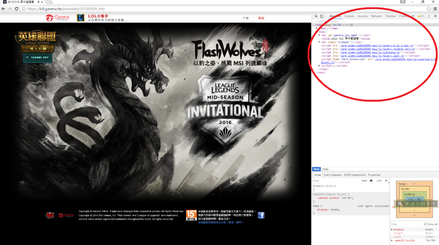

{kind=link}
{kind=link}
{kind=link}
網頁應用模式改變
jQuery 代表着傳統的以DOM為中心的開發模式，但現在複雜頁面開發流行的是以React為代表的數據/狀態為中心的開發模式。
以DOM為中心的網頁模式在維護複雜應用上非常麻煩且不可控。 React是以狀態為中心，以自動化方式(renderToString 和renderToStaticMarkup)渲染出DOM。
全球網站使用統計：
根據維基百科中的資訊，jQuery在全球前10000個存取最高的網站中，有65%使用了jQuery
在著名網站Builtwith的最新的週統計(Week beginning May 16th 2016)中，
jQuery在全球所有網站的使用量達到了29%(link for statistics)，達到42,376,890個網頁。
使用jQuery時，只要在HTML加上
並在之後加上你想要的元素就行了。例如：
只要在網頁中檢查其代源碼是否有類似語法，就能輕易查看網頁使用的js libarary。

以jQuery為library的js文件非常小
Document Object Model(文件物件模型):
DOM 物件模型把一個個 HTML 元素(element)都變成了物件(object)
，因此可以透過 JavaScript 程式設定、存取元素屬性 (attribute) 與內容。
基本上，整份文件屬於一個 document 物件。
官網中可以顯示許多jQuery的功能及範例
AJAX？
Asynchronous JavaScript and XML(JS和XML的異步操作)
EX:向服務器發送請求能夠得到特定部分回應
開源式
提供了擴展插口：JQuery.extend(object)，能夠在jQuery的命名空間上增加新函數。jQuery的所有插件都基於它開發，EX：
輸出結果為：
既然jQuery那麼好用，
為什麼Google/Youtube(Closure)和Facebook(React)等大型網頁都不使用？
jQuery 代表着傳統的以DOM為中心的開發模式，但現在複雜頁面開發流行的是以React為代表的數據/狀態為中心的開發模式。
以DOM為中心的網頁模式在維護複雜應用上非常麻煩且不可控。 React是以狀態為中心，以自動化方式(renderToString 和renderToStaticMarkup)渲染出DOM。
jQuery會迅速流行的最主要原因除了提供多種捷徑以外， 就是能夠兼容不同DOM的API(IE 6，7，8)， 而近幾年這類遊覽器已幾乎不存在了或可用更小的library要代替。 2015年11-12月的全球網頁遊覽器使用統計
原生JS已經補足了許多以前需要jQuery才能彌補或使用的內容。
jQuary Final Report by Group12.
{kind=link}